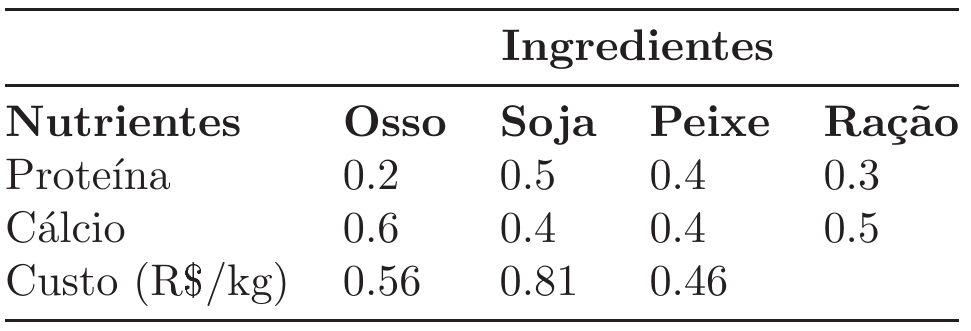

Chapter 2 Exercicios
Para cada um dos problemas abaixo, faça o que se pede:
- Encontre o modelo de PL que descreve o problema.
- Identifique os parâmetros do modelo.
- Encontre a solução ótima dos modelos, usando o software GUSEK https://gusek.sourceforge.net/gusek.html. Para um tutorial de como baixar e usar o software clique no link https://alexandrechecoli.github.io/5-Tutoriais/tutoriais.html.
2.1 Exercicio 1
Uma indústria de móveis produz 4 tipos de mesas. Cada mesa passa por dois processos, carpintaria e finalização. Os número de horas/homem necessários em cada etapa é mostrado na Tabela abaixo; bem como a disponibilidade. A Tabela também aponta o lucro pela venda de cada unidade de mesa.

2.2 Exercicio 2
(O problema do transporte) Uma empresa possui 2 fábricas (I e II) e 3 depósitos (A,B e C). Cada fábrica possui uma capacidade de produção e cada depósito uma demanda de consumo. Existe uma distância entre cada fábrica e cada depósito, de forma que há um custo associado a cada unidade de produto transportado de uma fábrica a um depósito. A empresa precisa atender às demandas dos depósitos, sem exceder as capacidades produtivas das fábricas. Os dados de demandas, capacidades e custos de transporte são mostrados na Tabela abaixo:

Por exemplo, a capacidade da fábrica 1 é de 350, o custo para se transportar uma unidade da fábrica I ao depósito B é de 1.7.
2.3 Exercicio 3
(Problema de mistura) Uma agroindústria deve produzir um tipo de ração para determinado animal. Essa ração é produzida pela mistura de farinhas de 3 ingredientes básicos: osso, soja e resto de peixe. Cada um desses 3 ingredientes contém quantidades de dois nutrientes necessários a uma dieta nutricional balanceada: proteína e cálcio. O nutricionista especifica as necessidades mínimas destes nutrientes em 1kg de ração. Cada ingrediente é adquirido a um certo custo unitário (R$/kg). Os dados são apresentados na Tabela abaixo:

Por exemplo, em 1kg de osso existe 20% de proteína e 60% de cálcio, a um custo de 0.56. 1kg de ração demanda pelo menos 30% de proteína e 50% de cálcio.
2.4 Exercicio 4
(Problema multi-período) Um depósito compra e armazena um item para vender depois. O depósito consegue armazenar somente 100 unidades do item, a um custo de R$1.00/unidade por trimestre. Em cada trimestre o preço de compra é igual ao de venda. Esses preços variam de trimestre para trimestre como mostrado na Tabela abaixo: